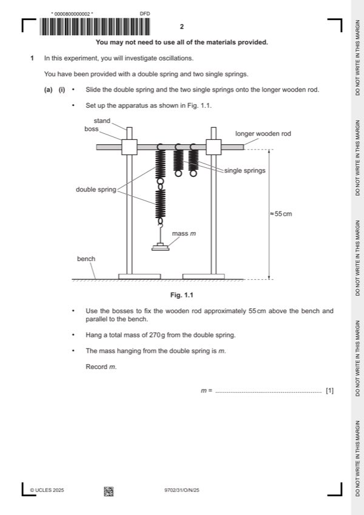

Question 1

Original paper page 2
Part 1(a)(i) — solution
- Value of m = 270 g with unit. 1
Mark points
- Value of m = 270 g with unit. 1
Part 1(a)(ii) — solution
Final value of T 1 in the range 0.5 s to 1.5 s with unit. 1
Repeats: at least two measurements of nT where n ⩾ 5. 1
Mark points
- Include the ideas shown in the solution above.
Part 1(b) — solution
T2 < T1 1
Mark points
- Include the ideas shown in the solution above.
Part 1(c) — solution
- T10.5 / s0.5
Mark points
- T10.5 / s0.5
Part 1(d)(i) — solution
Axes: 1
Axes must be labelled with the correct quantities.
Scales must be chosen so that the plotted points occupy at
least half the graph grid in both the x and y directions.
Scale markings are no more than 2 cm (one large square) apart.
Sensible scales must be used, no awkward scales (e.g. 3:10 or fractions).
University Press & Assessment 2025 Page 7 of 11
9702/31 Cambridge International AS & A Level – Mark Scheme October/November 2025
Mark points
- Include the ideas shown in the solution above.
Part 1(d)(i) — solution
Plotting of points: 1
All observations in the table must be plotted on the grid.
Diameter of plotted points must be ⩽ half a small square.
Points must be plotted to an accuracy of half a small
square in both x and y directions.
Quality: Trend of points must be positive. 1
All points in the table must be plotted on the grid for this mark to be awarded.
It must be possible to draw a straight line that is within
0.01 s½ (to scale) on the T1 axis (normally x-axis) of all plotted points.
Mark points
- Include the ideas shown in the solution above.
Part 1(d)(ii) — solution
Line of best fit: 1
‘Best fit’ is judged by the balance of all points on the grid (at least 4 points) about the candidate’s line.
There must be an even distribution of points either side of the line along the full length.
Lines must not be kinked or thicker than half a square.
Some candidates may choose to identify an anomalous point. If they identify one point as anomalous (e.g. by circling or
labelling) then this point is to be disregarded when judging the line of best fit. There must be at least four points left after the
anomalous point is disregarded.
University Press & Assessment 2025 Page 8 of 11
9702/31 Cambridge International AS & A Level – Mark Scheme October/November 2025
Mark points
- Include the ideas shown in the solution above.
Part 1(d)(iii) — solution
- Intercept read directly from the graph, with read-off at x = 0,
- y = mx + c or an equivalent expression
Mark points
- Intercept read directly from the graph, with read-off at x = 0,
- y = mx + c or an equivalent expression
Part 1(e) — solution
- P = candidate’s gradient value and 1
- Q = candidate’s intercept value
- No units for P. Unit for Q s or s0.5. 1
Mark points
- P = candidate’s gradient value and 1
- Q = candidate’s intercept value
- No units for P. Unit for Q s or s0.5. 1